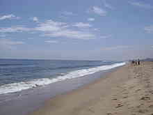

|
|
Places of interest in Chennai

Chennai (formerly Madras) is the capital city of the Indian state of Tamil Nadu. Located on the Coromandel Coast off the Bay of Bengal, it is the biggest industrial and commercial centre in South India, and a major cultural, economic and educational centre. Chennai is known as the "Detroit of India" for its automobile industry. As a growing metropolitan city in a developing country, Chennai confronts substantial urban pollution, traffic congestion, poverty, overpopulation, and other logistic and socioeconomic problems.
With its historic landmarks and buildings, long sandy beaches, cultural and art centers and parks, Chennai's tourism offers many interesting locations to visitors. One of the most important tourist attraction of Chennai is actually in the neighbouring town of Mahabalipuram with its ancient temples and rock carvings of the 7th century Pallava kingdom.
Chennai has been the most visited city in India by foreign tourists (since 2008), overtaking New Delhi and Mumbai with visitors to heritage sites in Kanchipuram and Mahabalipuram and medical tourists making up the largest numbers. In 2011, Chennai was ranked 41st in global top 100 city destination ranking, with 3,174,500 tourists, a 14 percent increase from 2010. This is up from 650,000 tourists in 2007, when Chennai was the third most visited city in India by foreigners ranked after Delhi and Mumbai. Tourists from USA, UK, Sri Lanka, Malaysia and Singapore had visited the city in 2007.
The city is host to the third largest expatriate population in India after Mumbai and Delhi, with 35,000 in 2009 and steadily climbing to 82,790 in 2011. Chennai is the only city in South Asia and India to figure in the "52 places to go around the world" by The New York Times.
go to top
Home
Developed by SUGATO CHAKRABORTY (currently pursuing B.Tech in CSE from West Bengal University of Technology, developer at Boscom Software,2014)
|
|